Chapter 5
Weakened king position
5.1 Introduction
The purpose in chess is to give mate to the enemy king. This is a truism, but it is less obvious that this goal is sometimes closer at hand than we would expect.
In the previous chapter we saw an example from the Romantic Era, when chess players went for the enemy king’s throat from move one. In this example we could see that the king may become a target already in the early middlegame if it lacks sufficient protection. For grandmasters, the safety of their king is an important factor. Sometimes a player is forced to allow a weakening of his king position with an unfavourable exchange. In other cases, the weakening can be forced by an (unexpected) piece sacrifice. In this chapter we will look at various examples where the opponent’s king is exposed to an attack by enemy pieces, caused by the destruction of its protective cordon for one reason or another. In all these cases we witness the same process: a breach is made in the defensive wall that the king has put up in front of itself. We can compare it to a medieval castle where a hole is made in the wall with a battering-ram. As soon as the passage is created, the attackers storm in through the hole and try to take possession of the area behind it. Chess isn’t any different. With a sacrifice, a breach is made in the protective pawn cordon, and as a consequence your pieces can enter through the hole and obtain free play against the unfortunate enemy monarch.
To keep things clear, we will make a division. In 5.2 we will discuss the king in the centre of the board; and in 5.3 the castled king will be dealt with.
In practice, a king in the centre will generally be an easier target for the enemy pieces than a castled king. However, in these sections we will discuss castled positions where the holes are already clearly visible.
5.2 King in the centre
The player who neglects the development of his pieces will not infrequently get his king into trouble. After all, the preparation of castling, bringing the king into (temporary) safety, is an essential part of development. Therefore it is not so surprising that such underdeveloped positions can be forced open by violent means.
The following fragments are characteristic illustrations of this theory.
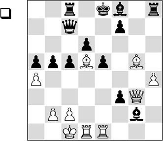
Despite his material advantage, Black has great problems. His pieces do not coordinate and his king is stuck in a draughty centre.
1.♖xe5+! dxe5 2.♕xe5+ ♗e7
2…♕xe5 is met by 3.♗c6+ ♖xc6 4.♖d8#. Of course, 2…♔d7 will end badly for Black as well, since his king is in the line of fire of virtually all of White’s pieces: 3.♕f5+ ♔e8 4.♗xf7+ ♕xf7 5.♕xc8# is the most accurate winning line.
3.♗c6+!
With this ‘diversion’ White forces the mate.
3…♔f8
Or 3…♕xc6 4.♕xe7#.
4.♕xh8#
1-0
Of Bobby Fischer we know that he had great admiration for the play of his compatriot Paul Morphy. The efficiency and the logic with which Morphy took on many of his opponents appealed to his imagination. If we compare Morphy’s game from the previous chapter with the following fragment, we discover several striking similarities.
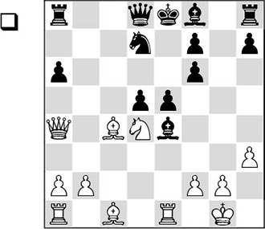
White has a substantial advantage in development. Since the black king is still in the centre, the following exchange sacrifice (analogous to several games by Morphy) is fully justified.
1.♖xe4! dxe4 2.♘f5
Better than 2.♕b3, which gives Black chances of survival after 2…♕b6 3.♗xf7+ ♔d8.
2…♗c5
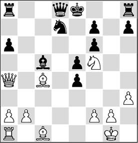
3.♘g7+
Quite instructive! The purpose of this move is solely to make castling impossible for Black, and then to continue the attack with renewed vigour.
3…♔e7
Now, 3…♔f8 is worse in view of 4.♗h6 ♔g8, and with the elegant queen switch 5.♕b3 ♕f8 6.♘f5, followed by ♕g3+, White immediately decides the game in his favour.
4.♘f5+ ♔e8
Now White must think of a way to breathe new life into his attack. Of course, he begins by activating as quickly as possible his two pieces that are still on their original squares.
5.♗e3
This move has the important secondary aim of trading off Black’s active bishop.
5…♗xe3
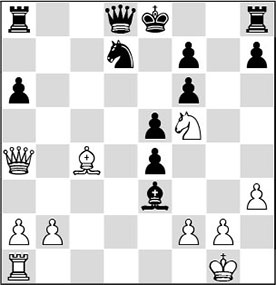
6.fxe3!
Active pieces are best left where they are. We can also learn this from Morphy, who was always aiming to increase the activity of his pieces. The knight is very dominant on f5. The exchange of the dark-squared bishops creates the threat of ♘d6+.
6…♕b6 7.♖d1
Now White’s last piece has been activated. Incidentally, here 7.♗xf7+ would also have sufficed to reach a winning position, for example: 7…♔d8 8.♖d1 ♖a7 9.♕a3!, and not only is the black king particularly unsafe, his pieces do not cooperate either.
7…♖a7 8.♖d6 ♕d8
The best defence under the circumstances, although Black is already fighting a losing battle.
Things would have gone terribly wrong after 8…♕xb2 9.♗xf7+:
A) If Black chooses 9…♔d8 here, analogously to what happens further on in the game, he will be immediately taken out with 10.♕a5+! ♔c8 (10…♖c7 also leads to disaster after 11.♗e6 ♕b5 12.♖xd7+ ♕xd7 13.♗xd7 ♔xd7 14.♕d5+) 11.♘e7+ ♔b8 12.♘c6+, and the roof comes crashing down;
B) 9…♔xf7 brings about an elegant conclusion: 10.♖xd7+ ♖xd7 11.♕xd7+ ♔g6 12.♕g7+ ♔xf5 13.♕g4#.
9.♕b3
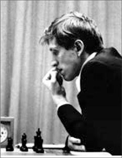
Bobby Fischer
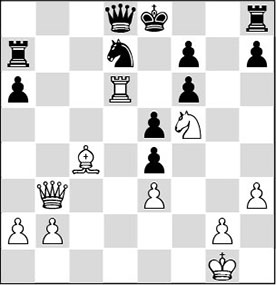
9…♕c7
Nothing can save Black, for instance: 9…♖f8 10.♘g7+ ♔e7 11.♕a3.
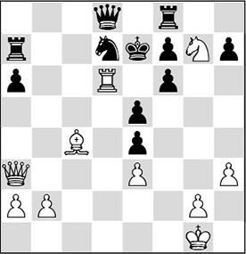
Analysis diagram
With the terrible threat of 12.♖e6 mate, or another deadly discovered check.
10.♗xf7+ ♔d8
After 10…♔f8 11.♗h5, mate is inevitable. An elegant line is 11…♘b6 12.♕f7+! ♕xf7 13.♖d8+ ♕e8 14.♖xe8#.
11.♗e6
Black resigned, since the pin will be his undoing. A possible continuation is: 11…♖b7 12.♕d5 ♕c8 13.♕a5+ ♔e8 14.♖xa6, and the many threats are too much for Black to handle.
There has been another World Champion who knew a thing or two about driving the enemy king into a tight corner.
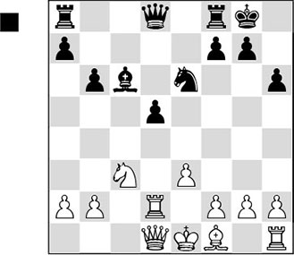
At first sight, White is not doing so badly. Black has an isolated pawn on d5 that needs support, and besides, the black pieces do not seem to radiate much activity. But this is a very static way of looking at the position. The dynamic factors speak in Black’s favour. In particular, there is the fact that the white king is still in the middle, and he still has to develop his bishop too. These factors turn out to be of overriding importance. Kasparov does not hesitate to make a promising pawn sacrifice:
1…d4!? 2.exd4
Also after 2.♘e2 things go wrong for White, as the following variation illustrates: 2.♘e2 ♕g5 3.♘xd4 ♘xd4 4.♖xd4 ♖ad8, and Black has taken over the initiative.
2…♖e8 3.f3
White acts dumb, but already his problems are enormous. For instance, he cannot develop smoothly: 3.♗e2 ♗xg2, and the principled 3.d5 fails to 3…♘f4+ 4.♗e2 (neither does 4.♖e2 help after 4…♘xd5!) 4…♘xg2+ 5.♔f1 ♗d7!, after which Black’s attack has taken on decisive proportions already, for example: 6.♔xg2? ♕g5+ 7.♔f1 ♗h3+ 8.♔e1 ♕g2, winning.
Playing the text move, White is not afraid of a discovered check by the knight, and neither does he fear 3…♕h4+?! 4.g3 ♕f6 5.♔f2, after which he will be more or less OK. But he is in for a nasty surprise.
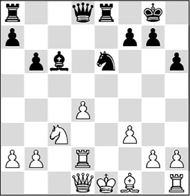
3…♗xf3!
An unexpected and quite unusual piece sacrifice. As we have also seen in earlier examples, the attacker by force removes a piece from the protective cordon around the enemy king, making it possible for his remaining pieces to besiege the latter. The hiding-place on f2 that White had in mind becomes extremely draughty after the text move. The following moves are more or less forced.
4.gxf3 ♕h4+ 5.♖f2 ♘xd4+ 6.♗e2 ♘xf3+ 7.♔f1 ♕h3+ 8.♖g2 ♘h4?!
Remarkably, Kasparov misses the best continuation of the attack. The 13th World Champion was famous for his ability to add force to his attacks by optimally involving all his pieces. He should have done that here with 8…♖ad8! 9.♕c1 ♘d2+ 10.♔g1 ♕e3+ 11.♖f2 ♖d6, and the threat of …♖g6 is lethal.
9.♖g1 ♖ad8 10.♕e1?
White collapses under the continuous pressure. The only chance of salvation was offered by 10.♕a4!, as Kasparov has indicated himself, but also in that case Black would have had splendid winning chances by 10…♘xg2 11.♖xg2 ♖e5 (11…♕e3 also looks very promising for Black) 12.♕g4 ♕xg4 13.♗xg4 f5 14.♗f3 g5.
10…♖d3! 11.♕f2
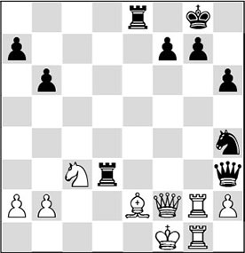
11…♘f3!
White’s pieces find themselves in a kind of positional zugzwang.
12.♖h1
After 12.♗xd3, 12…♘xh2 is mate. 12.♘d5 is met by the elegant 12…♖d1+ 13.♗xd1 ♘xh2#; and 12.♕g3 does not allow White to hold after 12…♘d2+ 13.♔e1 ♖xg3 14.♖xg3 ♘f3+ 15.♔f2 ♘xg1.
12…♖ee3
12…♖de3 was even more powerful.
13.♖g1 ♔h8 14.♖h1 b5
0-1
A pretty final move. The white knight cannot avoid being driven away, as 15.a3 is met by 15…a5 and 16…b4, after which the threat of 17…♖xe2 decides the game.
5.3 The castled king
In this section we will look at various castled positions that are either seriously weakened or wrenched out of joint by a characteristic sacrifice. In the mating attack that follows, the attacker disposes of various tactical means, which are instructive to watch. Again we divide the material:
* Already weakened
If in a king position the pawns are not aligned neatly before the king like a protective layer, we speak of a weakened position. The lack of a natural defensive structure allows the enemy pieces to attack the king.
We can distinguish a well-known type of combination in the following position.

Obviously, the weak point in Black’s king position is h7. However, in the event that White opens the d3-h7 diagonal with 1.e5, Black has planned a nice response: 1…f5!, when White has no time to take this pawn en passant, since his queen is hanging. In order to prevent this defence, Fischer came up with an elegant move:
1.♖f6!
This combination is known in chess literature as a blockading sacrifice.
1…♔g8
Black cannot take the rook under penalty of immediate mate (1…♗xf6 2.e5), while the rook is doing a good job on the f6-square.
2.e5 h6 3.♘e2!
1-0
The most precise move. White saves his knight, while threatening both 4.♖xd6 and 4.♖xh6. By the way, the black knight cannot budge in view of 4.♕f5, with inevitable mate.
* Weakening by means of a sacrifice
In order to dismantle the ‘natural protective cordon’ described above, now and then violent means need to be applied. This almost invariably involves a combination with a more or less forced character. The sacrifices must be accepted, as otherwise the opposite side is left with a second defect in his position. The following case is quite instructive.
Fragment 01 / Pin
The following classic combination is thematic and, as such, has been featured in various books. Here I will give just one version.
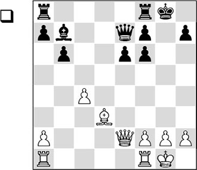
Black’s king position contains a gaping hole, but this doesn’t seem to be such a problem, since White does not have many pieces in the attack and Black can defend with the simple …♔h8 followed by …♖g8 and …♖g7. Still, the position contains a slightly hidden combinational motif, allowing White to emerge victorious:
1.♕g4+ ♔h8 2.♕h4
The point becomes clear. The typical defence 2…f5 is now impossible, since the black queen is unprotected. By playing the queen to h4, White introduces a pin that guarantees him the win.
Fragment 02 / ♗xh7+
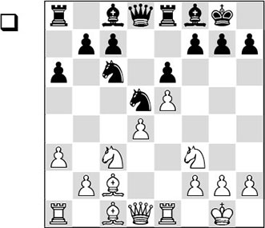
We can spot several features that enable White to successfully crash through the black king’s position. The most important thing is that he has driven the defending knight from f6 by playing his e-pawn to e5, and often this is the signal for the famous ‘standard sacrifice’:
13.♗xh7+! ♔xh7
Declining the sacrifice doesn’t come into consideration, for after 13…♔h8 14.♘g5 ♕d7 15.♕h5, Black can pack it in as well.
14.♘g5+ ♔g6
After 14…♔g8, White continues 15.♕h5, after which mate can only be prevented at the cost of the queen. The attempt to make space for his own king is punished in an instructive manner: 15…♗xa3 16.♕xf7+ (first White takes this pawn ‘for free’. After a few more moves, we will see why this is useful) 16…♔h8 17.♕h5+ ♔g8 18.♕h7+ ♔f8 19.♕h8+ ♔e7 20.♕xg7. It is mate, because the pawn on f7 is missing.
15.♕d3+
The strongest move. A second ‘standard move’ to study is 15.♕g4. This move also wins quickly: 15…f5 16.♕h4.
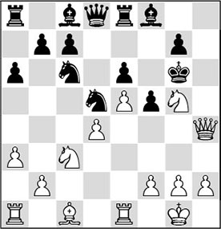
Analysis diagram
And there is no sensible remedy to the threat of 17.♕h7.
15.h4 also almost invariably comes into consideration in this type of position. It wins here as well: 15…f5 (15…♕d7, to move out of the coming discovered check by the knight, is refuted by 16.h5+ ♔h6 17.♕d3 f5 18.exf6 ♘xf6 19.♕g6#) 16.h5+ ♔h6 17.♘xe6+, and Black loses the house.
15…f5
Here, 15…♔h5 loses even more quickly: 16.♕h3+ ♔g6 17.♕h7#.
16.exf6+ ♔xf6
For a moment, it looks as if the black king will manage to escape. But the reality is different…
17.♕f3+ ♔e7 18.♕f7+ ♔d6 19.♘ce4#
Fragment 03 / Searchlight
If you are asked on which square in the diagram position you want to put a bishop, the answer does not seem difficult.
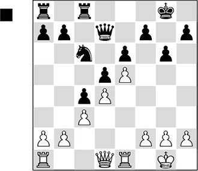
If you have chosen the f6-square, you’ve hit the bull’s eye! From this square the bishop ‘shines’ like a searchlight through the black king position, and mating patterns start to suggest themselves. Black has the following defensive methods at his disposal:
A) Pawn moves like 1…h6 or 1…h5, in order to keep the enemy queen from h6 with …♔h7;
B) Bring in reinforcements with …♕e8 or …♗e7;
C) Run for it with the king. This is the most tenacious defence, but first we must further investigate the other two defensive measures.
A1) 1…h6 2.♕d2 (2.♖e3, with the idea ♖h3, is also possible) 2…♔h7 3.♖e3 ♘e7 4.♖h3 ♘g8 5.g4! and now the threat of 6.♕xh6+! ♘xh6 7.g5 followed by 8.♖xh6 and 9.♖h8# becomes pressing. After 5…♕e8 6.♗g5 ♕f8 7.♗xh6 ♘xh6 8.g5, White also has a huge advantage;
A2) 1…h5 2.♕d2 (also good is 2.g4 ♘e7 3.♕d2 ♔h7 4.♕g5 ♘g8 5.gxh5 and White breaks through) 2…♔h7 3.♖e3 ♕e8 (or 3…♘e7 4.♖h3 ♘f5 5.g4 ♘g7 6.♕g5!) 4.♖h3 ♕f8 5.g4 ♕h6
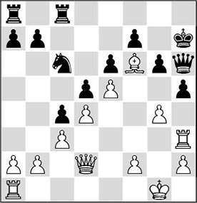
Analysis diagram
6.g5! (remarkably enough, White can permit himself this voluntary imprisonment of his bishop) 6…♕f8 7.♖xh5+! (the point of the previous move) 7…gxh5 8.♕e2, and in order to avoid mate Black must give up his queen.
B) 1…♕e8 2.♖e3 and now:
B1) 2…♕f8 3.♖h3 h6 (3…♘e7 also doesn’t help: 4.♕d2 ♖c7 5.g4, and Black is powerless against the threat of 6.♕g5, 7.♖h6 and 8.♕h4) 4.♕d2 ♔h7 5.g4 b5 6.♗g5, and again the defensive wall has been breached;
B2) 2…♘b8!?. This discovery forces White to play accurately. The knight aims for d7, from where it can question the strong bishop on f6: 3.♖h3 ♘d7 4.♕g4 ♕f8 5.♕g5 a5 6.♖e1 ♖a6 7.♖h6 ♘xf6 8.exf6, and again there is no remedy to the threat of ♕h4. The pawn on f6 more or less takes over the function of the bishop.
1…♔f8
Running away from the danger zone with the king can be a useful idea.
2.♕d2 ♔e8 3.♕h6 ♘e7
The other defensive ploy 3…♘d8 does not save Black either: 4.♕xh7 ♕c7 (or 4…♕a4 5.♕g8+ ♔d7 6.♕f8, and Black can no longer cope with all the threats) 5.♖e3, and here White can choose between various winning methods.
4.♕xh7 ♕d8
4…♕a4 5.♖e3 (White must also bring in reinforcements in order to make progress. He now aims at the weak point f7) 5…♕c2 6.♖f3 ♕xb2 7.♖e1 ♕a3 8.♗g5, and the weak point f7 will be Black’s undoing, for example: 8…♘f5 9.g4.
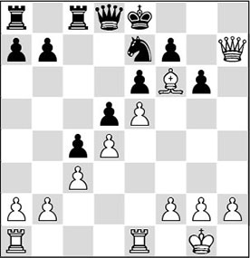
5.♖e3!
Once more, White takes aim at the weakest point in the enemy position: pawn f7. This is nicely in keeping with Steinitz’s theory, which points out that, when searching for the right attacking plan, you should make the weakest point in the enemy position your main target. Black will not be able to deal with the coming attack on his Achilles’ heel.
5…♖c7 6.♖f3 ♕c8 7.g4
Followed by ♗g5, after which the pawn on f7 will soon fall. (This position is taken from Vladimir Vukovic’s book Der Rochade-Angriff.)
A special case is the so-called ‘magnet combination’. Its essence is that the enemy king is ‘drawn out’ of its stronghold by a series of sacrifices, and becomes an easy prey for the opponent’s remaining pieces. For a good magnet combination it is essential that the defender is obliged to accept the sacrifices.
1.e4 c5 2.♘f3 ♘c6 3.d4 cxd4 4.♘xd4 g6 5.♗e3 ♘f6 6.♘c3 ♗g7 7.♗c4 0-0 8.♗b3 ♘a5?
This knight is badly misplaced here, as will soon become apparent.
9.e5 ♘e8
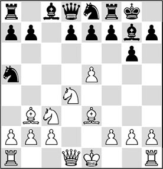
10.♗xf7+!
Here is the combination we mentioned earlier. It is based on the unprotected position of the black queen. Black must take, in view of the threat 11.♘e6.
10…♔xf7
10…♖xf7 would not help after 11.♘e6.
11.♘e6!
This is the actual magnet move. If the king takes, it will be drawn further into the open with 12.♕d5+ ♔f5, and soon end up in a mating net: 13.g4+! ♔xg4 14.♖g1+ ♔h5 15.♕g2 e6 16.♕g4#.
These variations highlight the unfortunate position of Black’s knight on a5: it deprives its queen of an escape square. Reshevsky could have resigned after
11…dxe6 12.♕xd8
but played on in this lost position until move 42 before throwing in the towel.
One of the prettiest and also most famous examples of a magnet combination can be seen in the following fragment:
Brussels ch-BEL playoff 1937 (1)
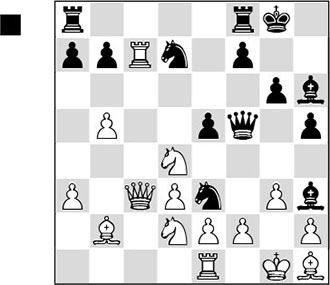
Black senses that there is something in it for him. With a fantastic queen sacrifice, he draws the white king out:
21…♕xf2+!!
He had to move fast, since he was already some material behind.
22.♔xf2 ♘g4+ 23.♔f3
This is the purpose of a magnet combination: the enemy king is lured forward, after which the hungry black pieces hurl themselves at him. Clearly, the white king could not move back, because after 23.♔g1, Black gives mate by 23…♗e3#.
23…e4+!
Clearance! Black vacates the e5-square for a knight. 23…♘xh2+ also led to a win.
24.♔xe4
If White takes on e4 with a piece or a pawn, there is an immediate checkmate: 24.♘xe4 ♘de5#.
24…♘df6+
The merit of this move is that the d5-square is also protected at the same time. Otherwise, the king would safely escape to the queenside.
25.♔f3 ♘xh2+
25…♘e5+ amounts to the same.
26.♔f2 ♘fg4+ 27.♔g1 ♗e3#
The funny thing is that the white king is mated on its initial square. Black’s minor pieces have achieved a magnificent degree of cooperation.
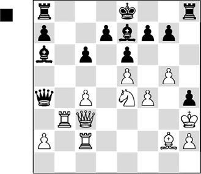
A tense position, where the strange placement of White’s king stands out. It appears to be unsafe on h3, but that is not at all the case. The black pieces don’t cooperate, mainly due to White’s strong central position.
Illescas wants finally to get round to connecting his rooks and decides in favour of kingside castling.:
1…0-0?
You can probably guess Kasparov’s reply. He immediately jumps at the opportunity.
2.♘f6+!
With this move White tears the black kingside apart, obtaining a dangerous attack against the enemy king. Since Black’s pieces can hardly intervene, it is not surprising that the attack will be successful.
In his comments in Yearbook 25, Kasparov indicates that the strategic 2.♘d6! might have been even better. After 2…♗xd6 3.exd6, the black pieces have no elbow room, and especially the position of his queen is a huge problem. White would have been able to win ‘with his eyes closed’. Now he still has to calculate accurately.
2…gxf6
2…♗xf6 3.gxf6 ♖fb8 4.♖a3 ♕xc4.
3.gxf6 ♗c5
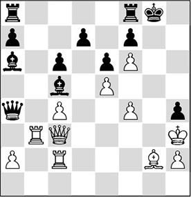
4.♗e4?!
Remarkably enough, Kasparov’s follow-up is not optimal. With 4.♔xh4! White could have cleared a square for his queen on g3, with an immediate mate threat: 4…♖fb8 (the other rook move doesn’t help either: 4…♖fd8 5.♕g3+ ♔f8, and now White continues with the subtle 6.♗f3! ♔e8 7.♕g8+ ♗f8 8.♖g2 with the magnificent threat of 9.♕xf7+, followed by 10.♗h5#, which cannot be parried) 5.♕g3+ ♔f8 6.♖d2! (instructive. 6.♕g7+? is premature on account of 6…♔e8 7.♕g8+ ♗f8, and Black has survived the worst).
A) Now 6…♔e8 would fail to the brilliant combination 7.♕g8+ ♗f8 8.♖xd7! ♔xd7 9.♕xf7+ ♔c8 10.♕xf8+ ♔c7 11.♕e7+ ♔c8 12.♕xe6+ ♔c7 13.♕e7+ ♔c8 14.♗h3#;
B) 6…♗c8 7.♖d6! (another severe blow which drastically prevents the defence with …♗f8) 7…♗xd6 8.exd6 ♕xc4 9.♕g7+ ♔e8 10.♕g8#.
4…♖fb8 5.♔xh4
The white king now does put its oar in for the attack. The pawn on h4 is removed so as to make the square g3 accessible for the white queen.
5…♔f8
After 5…♖xb3, White rounds off as follows: 6.axb3 ♕a3 7.♖d2!.
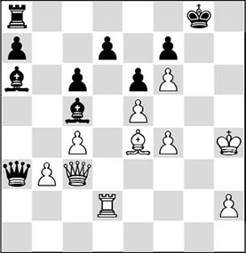
Analysis diagram
The rook is threatening to invade via the d-file; the queen threatens to do so via the g-file. Now, 7…♗c8 will fail to 8.♕g3+ ♔f8 9.f5! exf5. Black has to take on f5, since he cannot allow fxe6, but now there follows the fantastic 10.e6! fxe6 11.♕g7+ ♔e8 12.♗xc6, and there is no defence against the mate threats.
6.♖g2
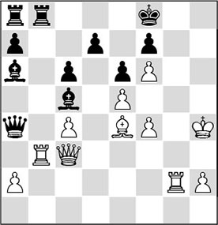
6…♕xc4
Black misses his best saving chance: 6…♖xb3 7.axb3 ♕a3 8.♕g3 ♔e8, and it looks as if Black has weathered the storm, but a nasty surprise awaits him: 9.♕g8+ ♗f8 10.♖g7 ♔d8 11.♗xc6! (blasting open the seventh rank, after which Black falls prey to a mating attack after all) 11…dxc6 12.♖xf7 ♔e8 13.♖h7 ♔d8 14.♕f7, and the white pieces on the seventh rank decide the issue.
7.♕xc4 ♗xc4 8.♗h7 ♗f2+
Black panics, but after 8…♔e8 9.♖g8+ ♗f8 10.♖xf8+ ♔xf8 11.♖g3 he would have been mated as well.
9.♔h5
1-0
A nice concluding move. After 9…♗e2+ 10.♔h6, mate is inevitable.
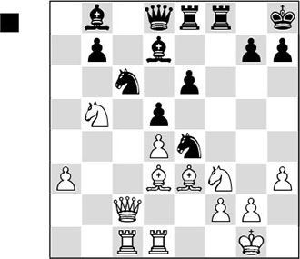
How can Black set the stage for a dangerous raid on the white king in this position? First he tears the pawn structure apart:
1…♖xf3! 2.gxf3 ♘g5 3.♔g2
Already the white position is no picnic. The weaknesses on f3 and h3 are glaring, and eliminating the black knight with 3.♗xg5 does not solve anything either after 3…♕xg5+ 4.♔f1 e5!, opening the c8-h3 diagonal and the e-file in one go.
3…♕f6?!
A logical continuation, but Black could have put up an even more powerful performance with 3…e5!. Then, after 4.♗f5, he could have struck with 4…♘xf3! 5.♔xf3 (or 5.♗xd7 ♘h4+ 6.♔f1 ♕xd7, and the black attack is already decisive) 5…♕f6 6.♔e2 ♗xf5 7.♕a4 ♕h4, and the white king is besieged from all sides.
4.f4
4.♗e2 is met by 4…e5.
4…♗xf4 5.♕d2?
Now White topples over. 5.♕e2 would have put up more resistance, even though also then Black would keep the initiative with 5…e5.
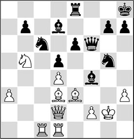
5…e5!
This is the move that is always the secret behind all Black’s operations. Both the bishop on d7 and the rook on e8 will now play an important role.
6.♖h1
The variations that arise after the critical 6.dxe5 ♗xh3+ are illustrative of the black attack. Samarian now gives: 7.♔h1 (7.♔g1 ♘f3+ 8.♔h1 ♕h4 9.♗xf4 ♗f1+ and mate on the next move) 7…♕h6 8.♗xf4 ♗g2+ 9.♔xg2 ♕h3+ 10.♔g1 ♘f3#.
Also after the text move, it turns out that Black has prepared a nice surprise for his opponent.
6…♘f3! 7.dxe5
The knight could not be captured: 7.♔xf3 ♗xe3+ 8.♔xe3 exd4#.
7…♘cxe5
Now all of Black’s pieces are activated, and therefore it is not surprising that the game finishes quickly.
8.♕e2 ♕g5+ 9.♔f1 ♗xh3+
0-1
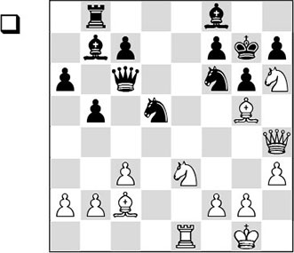
Black appears to have everything under control, but a cold shower awaits him.
1.♘ef5+!
Demolishing Black’s seemingly solid defensive works.
1…gxf5 2.♕g3!!
The hardest move to find in this attack. With this relatively quiet retreat, White introduces a lethal discovered check into the position.
2…♘h5
2…♔h8 is met by 3.♗xf6+, with mate.
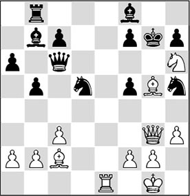
3.♗f6++!
This elegant move ends all resistance.
3…♔xf6 4.♘g8#
1-0
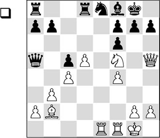
Although the black king’s position looks reasonably solid, White’s surplus of pieces on this wing brings about a quick decision.
1.♖xe8!
The defenders of the black king are eliminated.
1…♖xe8 2.♘h6+!
Next, the position is blown open with a sacrifice that Black cannot refuse:
2…gxh6
2…♔h8 3.♕xf7 ♗e7 4.♕g8+ ♖xg8 5.♘f7# – smothered mate!
3.♕g4+
Black resigned, as both 3…♔h8 and 3…♗g7 run into 4.♗xf6.
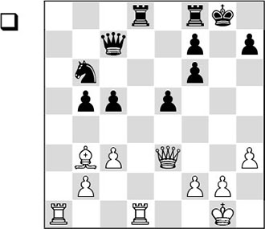
The ‘hole in the king position’ has already been created. All that remains for White is to bring in his pieces.
1.♕h6
An obvious move which, however, turns out to contain some hidden extra points. First of all White threatens 2.♗c2, after which 3.♕xh7# is unavoidable.
1…f5?
This allows an attractive combination. 1…e4 was the only move here, but after 2.♕xf6 Black would face an uphill struggle as well.
2.♗xf7+!
A bolt from the blue. Black now succumbs to a combination of factors. By the way, White had another win here: 2.♕g5+ ♔h8 3.♕f6+ ♔g8 4.♖xd8 ♖xd8 5.♗xf7+.
2…♕xf7
Other possibilities are: 2…♖xf7 3.♕g5+ ♔h8 4.♖xd8+; 2…♔xf7 3.♕xh7+ ♔f6 4.♕xc7.
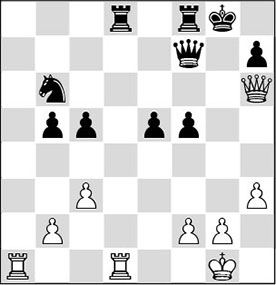
3.♖xd8! ♘a4
After 3…♖xd8 White would not only win the exchange, but also the unfortunate knight on b6: 4.♕g5+ ♔f8 5.♕xd8+.
4.b3
1-0
A nice concluding move. For instance, 4…♘xc3 will be met by the decisive 5.♖aa8.
Exercises
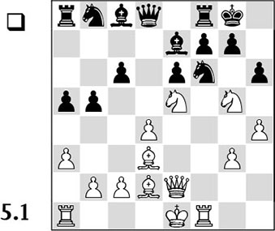
White has a large surplus of pieces on the kingside. How can he turn this into something concrete?
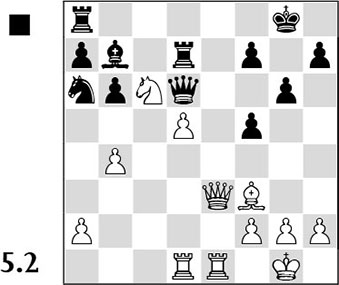
White’s last move was 22.b4, after which Black fell for the temptation to take this pawn with 22…♘xb4. What was White’s intention? How did White continue after this greedy reaction by his opponent?
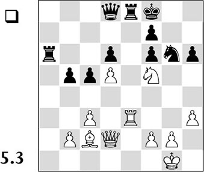
White has invested material in order to besiege the black king. How can he maintain his initiative?
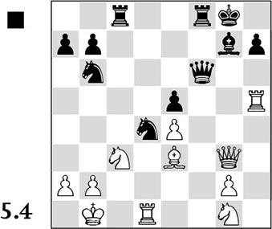
It is logical to consider the exchange sacrifice 22…♖xc3. But is the sacrifice justified? If so, how should Black continue after 23.bxc3 ?